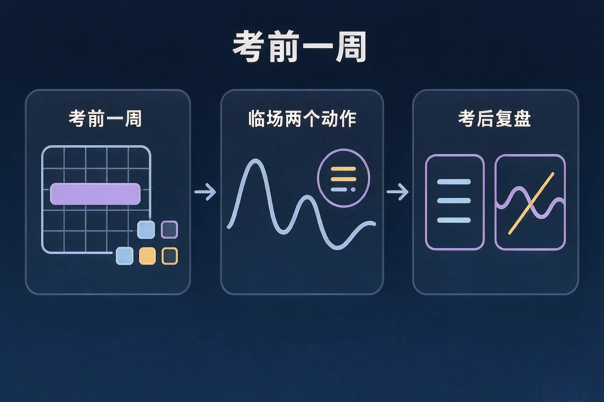
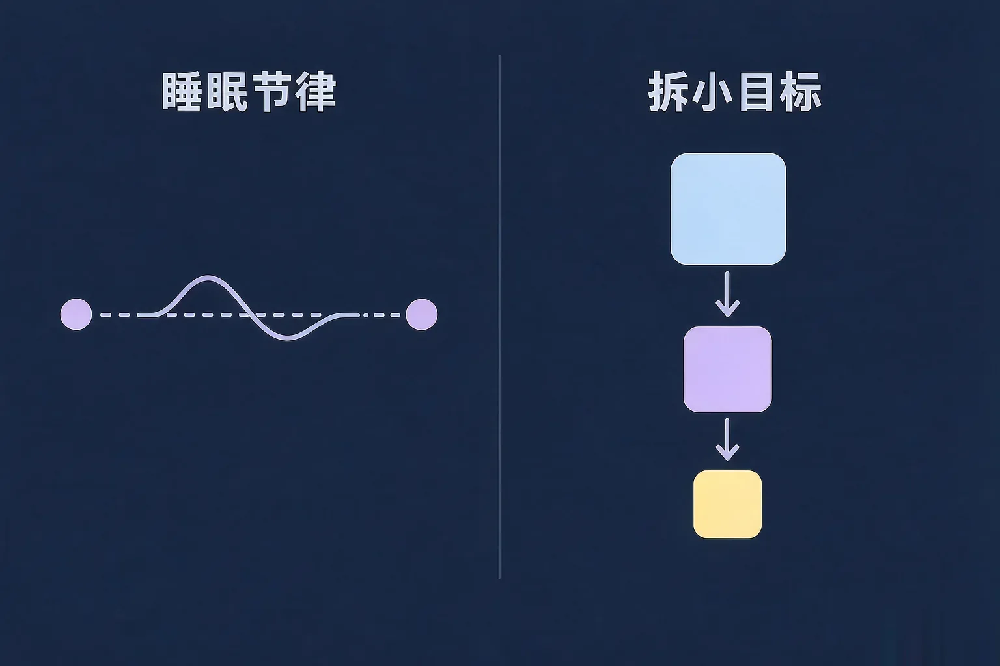
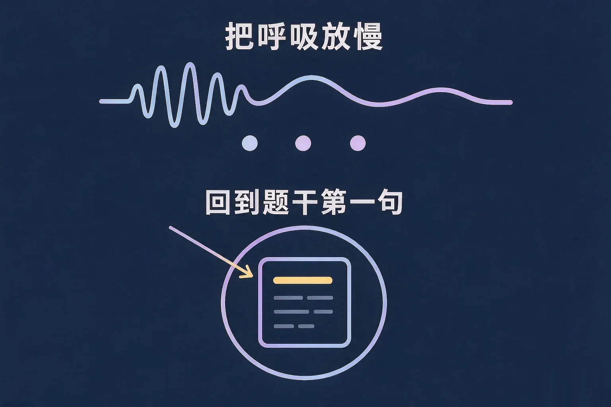

Gallery
v1.0.0 · skill v7.22.0
高中高二 · 抗挫与适应
考前这一周，除了更用力，还能做点什么？

选一个最贴近你最近状态的困惑，后面的内容都会围着它展开。
选择或输入后，这节课会围绕你的问题展开。
先凭直觉选一个，选完立刻看到解释——错了也没关系，正好知道要重点听哪里。
1. 离考试还有一周，你打算怎么安排这几个晚上？
先把睡觉和起床的时间立住，再往里填复习量，这一周才更可能走得下去。错因提醒：常见错误是误认为只要复习量够大就一定有收获，而睡眠被挤掉之后，同样的时间往往读不进去。
2. 「今晚复习物理」和「今晚把受力分析的两道错题重做一遍」，哪个更像一个能开始的目标？
目标是给自己一个起点，不是给自己一个范围。错因提醒：容易把拆小搞混成降低要求——总量不变，只是换成了今天做得完的写法。
3. 考场上心口跳得快、读不进题的时候，下面哪一种说法更贴近事实？
身体有反应不等于准备得不好，也不一定要先把它压下去才开始。错因提醒：误认为必须等到完全不紧张才能动笔，结果常常在等待里把时间耗掉。
这一周真正要管的，不是你还能多塞多少复习量，而是这两样有没有被挤掉。
为什么要先学这个？你已经知道考前要多复习；但但把所有力气都堆在复习量上，睡眠和休息就会被当成随时能挪用的部分；所以先学会稳住这两样，复习才落得下来。
误认为拆小目标就是降低要求。其实总量没变，只是从「复习完一章」换成了「今晚先做这两道题」——后者才有起点。

🔍 深层理解 换个角度再看一遍这件事，看看能不能说出背后的原理。
解释它：为什么睡眠要排在复习前面？因为读题、算题靠的都是第二天的注意力，而它主要来自前一天的睡眠。
比较它：「复习三小时」和「重做三道错题」用的时间可能差不多，区别在于后者知道什么时候算完成。
迁移它：这套拆法不只用在考试：一场演出、一次比赛、一个要交的作品，都可以先定住休息时间，再把目标拆到今天做得完。
七天，每天点一种排法。下面的可持续度算的不是分数，而是这个安排一周下来撑不撑得住。
考场上身体有反应，不等于你准备得不好。这时候能做的不是说服自己别紧张，而是两个具体动作。
动作一：把呼吸放慢
笔先放下，吸气数到四，呼气数到六，做三次。它的作用不是让你马上不紧张，而是先给身体一个着落点。
动作二：注意力回到题目第一句
用手指着题干，只读这一句，读完再读下一句。不求一次读懂整道题，只求有个起点。

误认为必须先把紧张彻底压下去才能动笔，于是把时间花在等自己不紧张上。其实可以先动笔，让呼吸慢一点，注意力会跟着回来一些。
三种情况，每种各点一个做法，看看它可能把后面带到哪里。三种都能让你继续坐着，差别在省不省力。
情况一 手有点抖，心口跳得很快
情况二 一道题卡了五分钟，越想越乱
情况三 脑子里冒出两个字：算了
情境：还有七天的期中考试，你越想越觉得什么都没准备好，晚上越睡越晚。
两个方向都容易走偏：一种是把睡眠当成复习的备用时间，越到考前越晚睡；另一种是把复盘变成反复回放当时的感受，卷子上的问题反而没被看见。第七天的晚上尤其容易两样一起发生。
把期待放在合适的位置：这五步不保证你考得更好，也不会让你从此不再紧张。它们能做的是让这一周有一个走得下去的节奏。
先凭直觉选一个，选完立刻看到解释——错了也没关系，正好知道要重点听哪里。
1. 「这次我要把落下的全部补回来，一天也不能再拖」——这句话最需要改的地方是：
决心大不等于做得到。缩到今晚做得完的一件小事，才有真正的开始。错因提醒：常见错误是误认为计划越严越有用，结果常常第二天就散了。
2. 关于「考前两晚熬夜多复习一点」，下面哪种说法更合适？
不是要求你提前很多天补觉，而是别用熬夜去换复习时间。错因提醒：容易把「稳住作息」搞混成「必须很早睡」，反而因为躺不着而更着急。
3. 考后复盘时，下面哪一句更容易带来下一步？
对着题目和时间的复盘，会直接接到一个动作。对着自己的评价，通常只会停在原地。错因提醒：误认为把感受说清楚就算复盘完了，其实卷子上那几处具体的地方还没被看见。
八句话，都是考完之后可能冒出来的想法。每一句选一栏，留意自己在哪一栏停留得更久。
写下来，留给自己：
从「复盘题目与时间」那一栏里，挑一件明天就能补的小事，写清它做完的样子。
先凭直觉选一个，选完立刻看到解释——错了也没关系，正好知道要重点听哪里。
1. 考前两晚，你躺下很久也睡不着，脑子一直在转。比较合适的做法是：
把注意力从「必须睡着」移开，通常会更容易睡。硬躺着催自己，反而让身体更紧。错因提醒：常见错误是误认为考前必须睡够几个小时才行，于是把睡不着当成了第二个问题。
2. 考试中间，一道大题的第二步你怎么也想不起来。这时更合适的做法是：
先跳过去，是把整张卷子的时间留在自己手上。错因提醒：容易把「先跳过」搞混成「放弃这题」——它只是换了个顺序，题还在那儿。
3. 考完回家的路上，你一直在回放当时那几分钟。下面哪一种做法更有用？
把复盘对准题目和时间，才接得上一个动作。当时的心情值得被看见，但不必在回家的路上分析清楚。错因提醒：误认为想通情绪之后问题就解决了，其实卷子上那几处地方还在原处。
回到开头那种星期：复习表排满、睡觉往后挪的时候，你不必先把状态调到最好。先定住睡觉时间，再把目标拆小，考场上记得放慢和回到，考完只复盘题目。做完这几件，这一周就算走得稳。
四步口诀，帮你记住：定住时间，拆小目标，放慢呼吸，回到题干。
给别人讲一遍：请用「时间、小步、放慢、回到」这四个词，说说你上一次考试本来可以怎么安排。
三层练习，做完第一、二层就算通关；第三层留给愿意继续探索的同学。
⭐ 基础巩固（必做）
⭐⭐ 能力应用（必做）
⭐⭐⭐ 迁移挑战（选做）
左边是学它之前要先会的，右边是学会之后可以继续探索的，下面是同一领域的伙伴知识。
图谱正在加载：首次进入需下载知识索引（约 1–3 秒），加载完成后本行会自动消失。